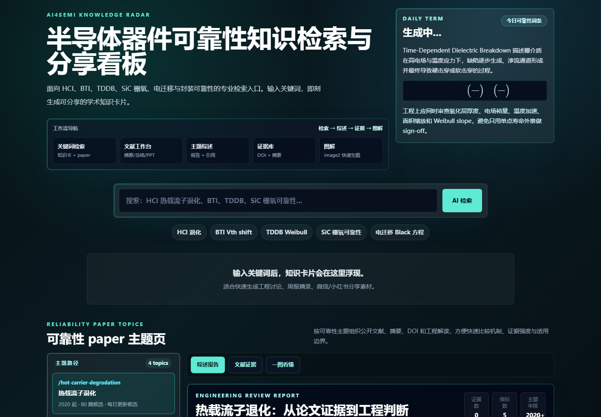

Failure Knowledge Base
让每一次失效，都成为下一次的参照
把历史失效案例与 8D 分析报告沉淀为本地可检索的知识库：工程师用自然语言描述异常现象，系统找出相似案例、还原时间线并汇总根因线索——全部数据不出本机。

为什么做这件事
半导体产线与可靠性团队的失效知识，大量沉淀在个人电脑里的 Excel 和 PDF 报告中——人一走，经验就断档。这个平台把非结构化的案例档案变成可问答的组织记忆，让「上次类似的案子怎么处理的」有据可查。
设计上坚持离线单机交付：内置轻量模型与便携运行时，拷贝即用，数据不出内网。对知识库的每一次导入都做去重与溯源，保证检索结果能回到原始案例。